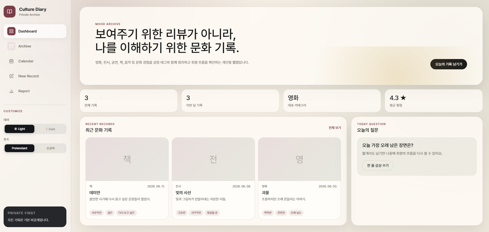
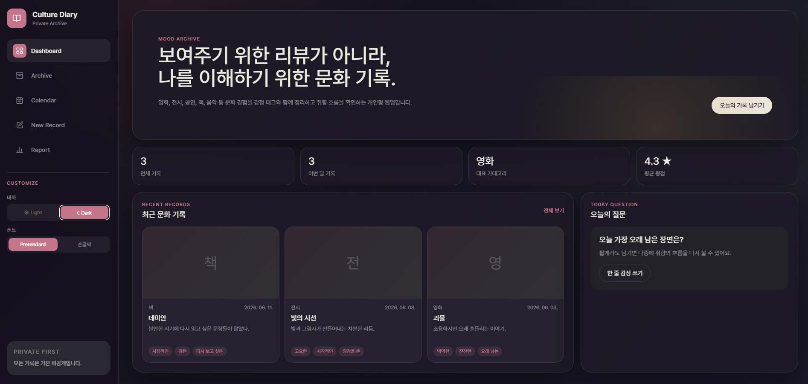

Personal Archive Web App
Culture
Diary
나를 이해하기 위한
문화 기록 아카이브
영화, 전시, 공연, 책, 음악 등 문화 경험을 감정 태그와 함께 정리하고, 쌓인 기록에서 나만의 취향 흐름을 발견하는 개인형 웹앱입니다.
arrow_downward scrollBackground & Problem
리뷰가 아닌,
나를 위한 기록이 필요했다
"SNS 리뷰는 보여주기 위한 것,
내 취향의 흐름은 따로 남기고 싶었다."
영화를 보고 느낀 감정, 전시에서 오래 머문 작품, 읽다가 밑줄 그은 문장 — 이런 기록은 SNS에 올리기엔 너무 개인적이고, 메모장에 흩어두기엔 아깝습니다. 문화 경험을 한 곳에 모아두면 취향이 어떻게 변해왔는지 다시 볼 수 있을 것이라 생각했습니다.
핵심 문제
기록 분산
영화 감상은 카카오톡, 책 메모는 노션, 전시 사진은 갤러리. 한 곳에서 다시 보기 어렵습니다.
공개 전제 구조
기존 리뷰 플랫폼은 타인에게 보여주는 형식이라 솔직한 감정보다 정제된 글쓰기가 됩니다.
취향 추적 불가
기록이 쌓여도 "내가 올해 어떤 것에 감동받았지?"를 한눈에 확인할 방법이 없습니다.
Project Goal
보여주기 위한 리뷰가 아니라,
나를 이해하기 위한 문화 기록
기능을 많이 넣는 것보다 기록이 자연스럽게 쌓이고, 쌓인 기록에서 내 취향을 다시 발견할 수 있는 구조를 먼저 잡았습니다.
- 기본 비공개 모든 기록은 기본 비공개. SNS 피로 없이 솔직한 감상을 남길 수 있습니다.
- 감정 태그 기반 기록 잔잔한, 먹먹한, 오래 남는 — 카테고리보다 감정으로 먼저 기억하게 합니다.
- 달력 + 아카이브 재탐색 날짜 기준 달력뷰와 카테고리·태그 필터로 지난 기록을 다시 찾을 수 있습니다.
- 취향 리포트 기록이 쌓이면 카테고리별 통계, 감정 태그 순위, 나만의 취향 문장을 생성합니다.
Problem Solving
5개 화면으로 구성한
개인 문화 아카이브
Dashboard · Archive · Calendar · New Record · Report — 각 화면이 독립적으로 쓰이면서도 하나의 취향 흐름으로 이어지도록 구성했습니다.
Dashboard
전체 기록 수, 이번 달 기록, 평균 평점, 대표 카테고리를 한눈에 확인합니다. 최근 기록과 오늘의 질문 카드를 함께 배치했습니다.
Archive
카드형 / 리스트형 전환, 카테고리 필터, 감정 태그 검색, 정렬 기능으로 쌓인 기록을 다양한 기준으로 다시 탐색합니다.
Calendar
날짜별로 문화 기록을 확인합니다. 스티커 드래그 앤 드롭으로 날짜에 무드를 붙이는 감성 기능을 추가했습니다.
New Record
카테고리, 제목, 날짜, 평점, 감정 태그, 한 줄 감상, 상세 감상, 대표 이미지를 입력합니다. 감정 태그 자동완성을 제공합니다.
Report
카테고리별 기록 수, 감정 태그 순위, 쌓인 기록에서 생성하는 나만의 취향 문장을 확인합니다.
Customize
라이트/다크 테마, Pretendard/손글씨 폰트 전환을 지원합니다. 개인 취향에 맞게 읽는 경험을 조정합니다.

Design System
따뜻한 버건디 + 올리브,
기록에 집중하게 하는 팔레트
SNS 피드처럼 자극적이지 않게, 기록 행위 자체에 집중할 수 있도록 채도를 낮춘 자연색 계열을 선택했습니다. 라이트와 다크 두 테마 모두에서 동일한 분위기를 유지합니다.
- Primary
- Burgundy #7a3e48 — 강조·아이콘·번호
- Secondary
- Olive #6f7d5c — 보조 강조
- Accent
- Mustard #c7a24a — 평점·하이라이트
- Background
- Warm Ivory #f5f0e7 — 메인 배경
- Font
- Pretendard (기본) / Nanum Pen Script (손글씨)
- Frontend
- HTML · CSS · Vanilla JS (단일 파일 SPA)
- Storage
- localStorage (MVP) → Supabase 확장 예정
- AI 활용
- Claude로 컴포넌트 구조 설계 및 JS 로직 구현
- 확장 방향
- React/Next.js · Supabase Auth · RLS · PDF 리포트
Result
기록이 쌓이면
취향의 흐름이 보이는 앱
단순 기록 저장이 아니라, 쌓인 데이터에서 나만의 취향 패턴을 발견할 수 있는 구조를 만들었습니다. Dashboard에서 한눈에 보고, Archive에서 다시 찾고, Report에서 나를 이해하는 흐름입니다.
- Dashboard — 전체 기록 요약 + 최근 기록
- Archive — 카드/리스트형 + 카테고리·태그 필터
- Calendar — 날짜별 기록 + 스티커 드래그앤드롭
- New Record — 감정 태그 자동완성 + 이미지 업로드
- Report — 카테고리 통계 + 취향 키워드 문장 생성
- 라이트/다크 + Pretendard/손글씨 테마 전환
Review
"기능을 많이 넣는 것보다, 기록이 자연스럽게 쌓이는 구조가 더 중요하다는 걸 다시 확인했습니다."
Culture Diary를 만들면서 가장 신경 쓴 건 '왜 기록하는가'였습니다. SNS 리뷰와 달리 이 앱의 기록은 나 자신을 위한 것입니다. UI를 조용하고 차분하게 유지하면서 기록 행위 자체에 집중하게 하는 것이 목표였습니다.
Vanilla JS 단일 파일 SPA 구조로 구현하면서 뷰 전환과 상태 관리를 직접 다루는 경험이 좋았습니다. localStorage 기반으로 빠르게 MVP를 완성한 뒤, Supabase 연동으로 확장할 수 있는 흐름도 미리 설계해두었습니다.
다음 단계: React/Next.js 전환 · Supabase Auth + RLS로 사용자 데이터 보호 · 연간 문화 리포트 PDF 내보내기